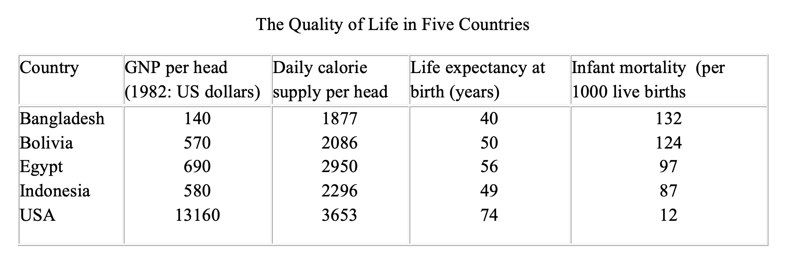

You should spend about 20 minutes on this task.
The following table gives statistics showing the aspects of quality of life in five countries.
Summarise the information by selecting and reporting the main features making comparisons where relevant
Write at least 150 words.
